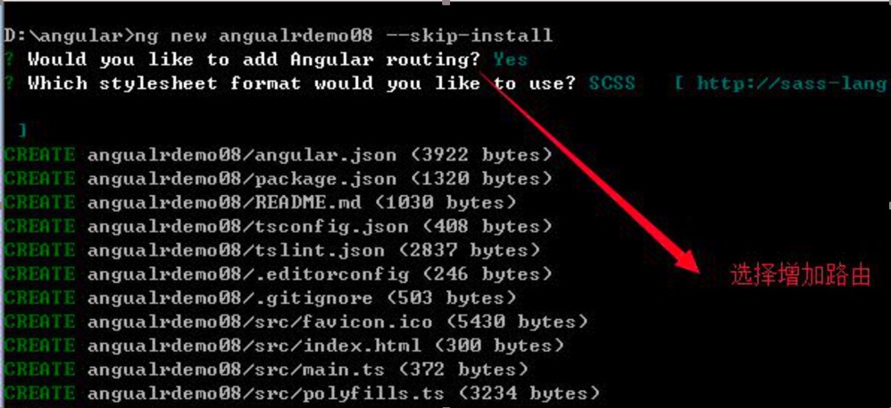

命令行创建项目时 路由选项填写yes
在 app-routing.module.ts 路由文件中配置路由
引入组件
配置路由
找到 app.component.html 根组件模板，配置 router-outlet 显示动态加载的路由
RouterLinkActive指令会为当前激活的路由绑定指定的css类
** 路由链接的激活状态会向下级联到路由树中的每个层级，所以，父子路由链接可能会同时激活。要覆盖这种行为，可以把 [routerLinkActiveOptions] 绑定为 {{'{'}} exact: true } 表达式，这样 RouterLink 只有当 URL 与当前 URL 精确匹配时才会激活
配置路由
跳转传参
获取路由
引入router服务并注入到组件，再使用navigate方法跳转
引入 NavigationExtras
定义方法进行页面跳转
获取 get 传值
配置路由
在父组件中定义routerOutlet
<router-outlet></router-outlet>